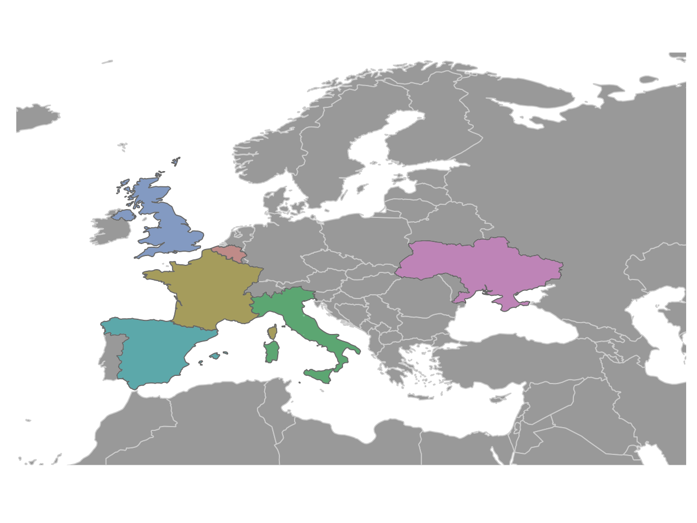

European flights
By Federica Gazzelloni
July 12, 2022
Overview test
This #TidyTuesday week 28 is all about European flights. I was looking for a visualization that would represent the differences among countries in terms of the number of airports versus number of flights. I looked on the internet for getting some inspiration and then landed on Pintarest, where I found exactly what I was hoping for: a Sankey! First of all, What is a Sankey? The answer is clearer after you make one of your own. In short, it is a network graph connecting diffent groups with a ribbon. A few things that made me think about a lot were the requirenment for the type of data to combine, the consequent label results, and the grouping.
So, let’s have a go in making a Sankey.
Have a quick look at the data for European flights:
Load the {tidyverse} and the data from: #TidyTuesday GitHub repo
flights <- readr::read_csv("https://raw.githubusercontent.com/rfordatascience/tidytuesday/master/data/2022/2022-07-12/flights.csv")
Jus a little cleaning for this type of data with janitor::clean_names() function, and it’s ready to use.
flights <- flights %>%
janitor::clean_names()
The best way is to select a subgroup among the list of the European countries in the data set, and represent the diversity in aerial traffic.
As an example I choose Ukraine airports, and found that there is only one airoprt for Ukraine in the dataset. But, the interesting thing is that it covers on average almost the same aerial traffic of other European countries such as Italy which is provided with a far larger number of airports, in this dataset.
flights %>%
filter(state_name == "Ukraine") %>%
count(state_name, apt_name)
# A tibble: 1 × 3
state_name apt_name n
<chr> <chr> <int>
1 Ukraine Kiev - Boryspil 2248
Compare Italy median of the total number of flights by airports with the only available airport aerial traffic in Ukraine:
flights %>%
filter(state_name %in% c("Ukraine", "Italy")) %>%
count(state_name, pivot_label, flt_tot_1) %>%
group_by(state_name) %>%
summarize(total_median = median(flt_tot_1))
# A tibble: 2 × 2
state_name total_median
<chr> <dbl>
1 Italy 186
2 Ukraine 212.
The results of this preliminary data exploration arise a question:
Does the number of airports influence countries' aerial traffic?
Waffle
Make the first part of the visualization as a series of waffle, one for each selected country to show the diferences in number of airports.
Selected are 6 countries with a varied number of airports and flights, this is done to give the idea of the differences.
df <- flights %>%
filter(state_name %in% c("Ukraine", "Belgium", "France", "Italy", "Spain", "United Kingdom")) %>%
group_by(state_name) %>%
count(apt_name, sort = T) %>%
mutate(apt_id = seq(1, length(state_name), 1)) %>%
summarise(tot = max(apt_id)) %>%
arrange(-tot)
df
# A tibble: 6 × 2
state_name tot
<chr> <dbl>
1 France 63
2 Spain 55
3 United Kingdom 19
4 Italy 14
5 Belgium 5
6 Ukraine 1
Load both libraries {waffle} and {ggsankey} to use a feature in the waffle which is provided by the ggsankey package.
library(waffle)
library(ggsankey)
The waffles shows the number of airports for the selected countries on a total of 100. To make the waffle we can safetly use the geom_waffle() layer
waffle <- df %>%
mutate(rr = 100 - tot) %>% # this is the remaining part of the 100 set of cubes in the waffle
pivot_longer(cols = c(tot, rr), names_to = "values_name", values_to = "values") %>%
arrange(state_name) %>%
ggplot(aes(fill = values_name, values = values)) +
geom_waffle(
n_rows = 10,
size = 0.33,
make_proportional = F,
colour = "white",
flip = TRUE,
show.legend = F
) +
facet_wrap(~state_name, nrow = 1) +
coord_equal() +
scale_fill_manual(values = c("grey60", "#8E0152")) +
theme_sankey(base_size = 16) +
theme_enhance_waffle() +
theme(
strip.text = element_blank(),
plot.background = element_blank(),
panel.background = element_blank()
)
waffle

Sankey
The purpose of this sankey is to show the differences among selected countries on number of airports and number of flights, from 2016 to 2022 for 6 selected countries.
The {ggsankey} package uses an interesting function make_long() which transform provided object into a longer data frame, with vectors named as:
- x, next_x, node, and next_node
ready to be used inside the geom_sankey.
sankey <- df %>%
left_join(flights %>% select(state_name, flt_tot_1), by = "state_name") %>%
group_by(state_name, tot) %>%
summarize(total_med = median(flt_tot_1), .groups = "drop") %>%
ungroup() %>%
mutate(
class = cut(tot,
breaks = c(0, 1, 5, 50, 65)
), # ) %>% pull(tot) %>% summary()
tot_class = cut(total_med,
breaks = c(0, 10, 30, 65, 120, 700)
)
) %>% # count(tot_class)
mutate(
class_id = case_when(
class == "(0,1]" ~ "one",
class == "(1,5]" ~ "up to 5",
class == "(5,50]" ~ "up to 50",
TRUE ~ "up to 65"
),
tot_class_id = case_when(
tot_class == "(0,10]" ~ "one",
tot_class == "(10,30]" ~ "up to 30",
tot_class == "(30,65]" ~ "up to 65",
tot_class == "(65,120]" ~ "up to 120",
TRUE ~ "up to 700"
)
) %>%
mutate(state_name = ifelse(state_name == "United Kingdom", "UK", state_name)) %>%
# function to make the object ready to be used in the geom_sankey
make_long(tot_class_id, class_id, state_name) %>%
ggplot(aes(
x = x,
label = node,
next_x = next_x,
node = node,
next_node = (next_node),
fill = factor(node)
)) +
geom_sankey(
flow.alpha = 0.8,
node.color = 1,
show.legend = FALSE
) +
geom_sankey_text(angle = 0, family = "Roboto Condensed", size = 3) +
scale_fill_manual(values = colorRampPalette(RColorBrewer::brewer.pal(11, "PiYG"))(13)) +
theme_sankey(base_size = 16) +
coord_flip(expand = F) +
theme(
axis.text = element_blank(),
axis.title = element_blank(),
plot.background = element_blank(),
panel.background = element_blank()
)
sankey

European Map
The map has been saved as map.png and sourced in the main visualization. The code can be found in a separate file named “eu_coords.R”.

Use {cowplot} for assembling the plots, adding notes, the map and the logo as images.
library(cowplot)
combo <- ggdraw() +
draw_image("map.png",
scale = 0.5,
x = 0.3, y = 0.4
) +
draw_plot(waffle,
scale = 1,
x = 0, y = 0.2
) +
draw_plot(sankey,
scale = 0.7,
width = 1.4,
height = 0.85,
x = -0.2, y = -0.093
) +
draw_label("Countries such as France and Spain have the highest number of airports while this\nseems reasonable, other countries such as Ukraine with just one airport record\namong the countries with the highest total number of flights. Data are released\nwithin a range of 7 years from 2016 to 2022.",
x = 0.02, y = 0.90, size = 9, hjust = 0,
fontfamily = "Roboto Condensed"
) +
draw_label("N. of airports",
x = 0.1, y = 0.4,
fontfamily = "Roboto Condensed"
) +
draw_label("N. of flights\n(median values)",
x = 0.1, y = 0.16,
fontfamily = "Roboto Condensed"
) +
draw_image("eurocontrol_logo.png",
scale = 0.1,
x = -0.45, y = -0.52
) +
draw_label("Eurocontrol aviation intelligence\n(ansperformance.eu)",
x = 0.22, y = -0.02, size = 9, fontfamily = "Roboto Condensed"
)
combo

Use {ggpubr} for arranging the grid of the main visualization, so it can be annotate with annotate_figure() to making it a bit more standing out with spaces around the plot and top and bottmo annotations already at the right distance/position.
library(ggpubr)
ggpubr::annotate_figure() provides a framework for annotating the plot on the four sides top, bottom, left and right. It comes a handy function when you’d like to position notes or even rich text at specified positions. To use it, it requires an object from ggpubr::ggarrange().
plot <- ggpubr::ggarrange(combo)
ggpubr::annotate_figure(plot,
top = text_grob("Does the number of airports influence countries' aerial traffic?",
color = c("#8E0152"), face = "bold", family = "Roboto Condensed",
size = 18, vjust = 1.4
),
bottom = text_grob("DataSource:TidyTuesday 2022 week28 European flights\nDataViz: Federica Gazzelloni (@fgazzelloni)",
color = "#8E0152",
hjust = 1, x = 1, face = "italic", family = "Roboto Condensed",
size = 10
),
left = text_grob("", color = c("#7FBC41"), rot = 90, size = 10),
right = text_grob(bquote(""), color = c("#DE77AE"), rot = 90, size = 10),
fig.lab = "European flights", fig.lab.face = "bold"
)
Then finally, save it as .png file with ggsave() function. I specified a height a little bit more than the default values provided as I needed more space.
The other arguments, dpi and bg are to set the pixels and the background color.
ggsave("waffle_sankey.png",
dpi = 320,
bg = "grey95",
height = 7.2
)
- Posted on:
- July 12, 2022
- Length:
- 7 minute read, 1336 words
- See Also: